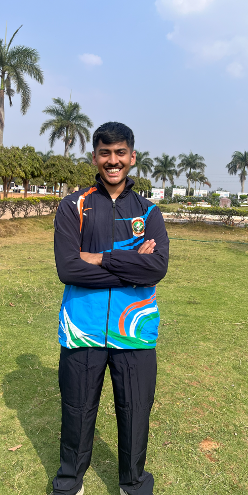

Final-year Medical Electronics Engineering student. I build end-to-end solutions—from real-time ECG hardware to deep learning pipelines and data-driven applications.

I'm currently a final-year student at Ramaiah Institute of Technology (GPA 8.76/10), with a broad interest in data science, machine learning, and clinical problem-solving. My approach is hands-on: rather than just running pre-built notebooks, I focus on understanding the full pipeline—from sensor hardware and image ingestion to regulatory compliance and model inference.
Beyond code, I've spent time in R&D understanding how hardware standards apply in the real world, and I've shipped web tools used by hundreds of students. I'm open to roles across biomedical engineering, data science, and general ML, working with teams that care deeply about building impactful technology.
From hardware sensors to web deployment.
Computer Vision, Classification, and Pipelines.
Products built & used natively by 700+ people.
Bengaluru, India.
Open to relocate.
GPA: 8.76 / 10
End-to-end diabetic retinopathy screening pipeline. Preprocessing fundus images using CLAHE and augmentation, training a CNN classifier to understand the full pipeline from first principles.
Real-time ECG acquisition pipeline built from scratch. Interfaces an AD8232 sensor to Python, rendering live signals on a GUI. Uses Logistic Regression (trained on 3k PhysioNet samples) for classification.
Credit-weighted GPA calculator for the VTU curriculum. Developed and launched multi-department support with a clean UI. Currently utilized by over 700+ students.
Grew membership from 35 to 65 (86% growth). Organised 4 technical events including '404: Murder Not Found', pulling 75+ teams and 150+ participants.
Acquired out of a genuine interest in RF and signal systems, going beyond just obtaining the certificate.
deeplearning.ai / Coursera. Covered X-ray, pathology, and MRI interpretation utilizing deep learning techniques.
State VTU Category Champion and South Zone VTU Nationals representative.
Awarded the Gold Medal for Best Project out of a cohort of 50+ participants.
NCC A Certificate / Flight Sergeant, 6 Kar Air Squadron. Rajyapuraskar Scout & Scout Leader (Loyola Troop) since age 15.